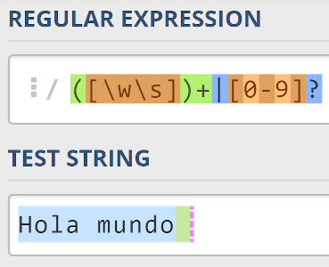

EXPRECIONES REGULARES
¿Que son las expreciones regulares?
Las expresiones regulares, también conocidas como regex o regexp, son como fórmulas que se usan para encontrar patrones específicos dentro de texto. Imagina que tienes un gran archivo lleno de información y necesitas buscar todas las direcciones de correo electrónico o todos los números de teléfono. En lugar de leer todo a mano, puedes usar una expresión regular para que te señale automáticamente dónde están esos patrones. Las expresiones regulares se componen de caracteres literales (como las letras y números que escribes normalmente) y caracteres especiales que tienen significados específicos dentro de la expresión. Por ejemplo, el asterisco (*) significa "cero o más veces" y el punto (.) significa "cualquier carácter".
¿PARA QUE SIRVEN?
Las expresiones regulares, también conocidas como regex, son patrones que se utilizan para buscar y manipular cadenas de texto. Son una herramienta poderosa que se puede usar en una amplia variedad de aplicaciones, incluyendo:
Procesamiento de texto:
Búsqueda:Las expresiones regulares se pueden usar para encontrar patrones específicos dentro de un texto, como números de teléfono, direcciones de correo electrónico o palabras clave.
Reemplazo:Las expresiones regulares se pueden usar para reemplazar patrones específicos dentro de un texto por otros patrones.
Validación: Las expresiones regulares se pueden usar para validar la entrada del usuario, como asegurarse de que una dirección de correo electrónico tenga el formato correcto.
Extracción de datos: Las expresiones regulares se pueden usar para extraer datos específicos de un texto, como fechas, precios o nombres.
Programacion:
Desarrollo web:Las expresiones regulares se usan en el desarrollo web para validar formularios, sanitizar entradas, procesar URLs y generar código HTML.
Scripting: Las expresiones regulares se usan en scripts para automatizar tareas como buscar y reemplazar archivos, limpiar datos y generar informes.
Administración de sistemas: Las expresiones regulares se usan en la administración de sistemas para buscar registros, configurar archivos y automatizar tareas.
Las expresiones regulares son una herramienta poderosa y versátil que se puede usar para una amplia variedad de tareas. Si bien pueden parecer intimidantes al principio, aprender los conceptos básicos de las expresiones regulares puede ser muy beneficioso para cualquier persona que trabaje con texto o datos.
Escapes de clase de carácter de carácter único
| Escape de carácter | Carácter representado | Descripción |
|---|---|---|
| \n | #x0A | Nueva línea |
| \r | #x0D | Retorno |
| \t | #x09 | Tabulador |
| \\ | \ | Barra inclinada invertida |
| \| | | | Barra vertical |